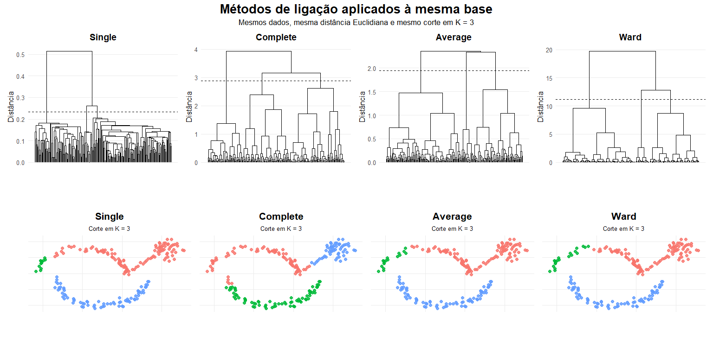

Até este momento estudamos métodos para representar os dados em um espaço de menor dimensão.
Agora surge uma nova pergunta:
Será que existem grupos naturais nos dados?
A análise de agrupamento (Cluster Analysis) procura responder essa questão, identificando automaticamente conjuntos de observações semelhantes entre si.
Análise de Agrupamento
Características importantes:
não existem rótulos conhecidos;
o algoritmo deve descobrir a estrutura dos dados;
observações semelhantes devem pertencer ao mesmo grupo.
Importante
A análise de agrupamento é um problema clássico de aprendizagem não supervisionada.
Aprendizagem supervisionada × não supervisionada
Aprendizagem Supervisionada
Aprendizagem Não Supervisionada
Classes conhecidas
Classes desconhecidas
Variável resposta disponível
Não existe variável resposta
Classificação
Agrupamento
Regressão
Descoberta de padrões
Nota
Enquanto os métodos supervisionados aprendem a partir de exemplos rotulados, os métodos de agrupamento procuram identificar padrões presentes apenas nas variáveis explicativas.
O que caracteriza um grupo?
Intuitivamente, um agrupamento deve apresentar duas propriedades:
Alta similaridade interna: observações pertencentes ao mesmo grupo devem ser semelhantes entre si.
Baixa similaridade externa: observações pertencentes a grupos diferentes devem ser suficientemente distintas.
Esses dois objetivos geralmente são conflitantes e dependem da forma como a similaridade é definida.
Importante
Não existe uma definição única de “grupo”.
Cada algoritmo utiliza um conceito diferente de proximidade e similaridade.
Existe um algoritmo ideal?
Diferentes algoritmos são adequados para diferentes estruturas dos dados.
Estrutura dos dados
Algoritmo mais indicado
Grupos aproximadamente esféricos
K-means
Estruturas hierárquicas
Agrupamento Hierárquico
Estruturas não lineares
Agrupamento Espectral
Nota
A escolha do algoritmo depende da geometria dos dados e da definição de similaridade adotada.
Como medir a semelhança entre observações?
A ideia central da análise de agrupamento é reunir observações semelhantes.
Mas surge uma questão fundamental:
Como medir o quão semelhantes são duas observações?
Para isso, utilizamos medidas de distância ou medidas de similaridade.
Quanto menor a distância entre duas observações,
mais semelhantes elas tendem a ser.
Importante
A escolha da medida de distância influencia diretamente os grupos encontrados.
Distância Euclidiana
A distância Euclidiana corresponde ao comprimento do segmento de reta que liga duas observações.
Para duas observações \(\mathbf{x}_i=(x_{i1},\ldots,x_{ip})\) e \(\mathbf{x}_j=(x_{j1},\ldots,x_{jp})\), a distância Euclidiana é dada por
O Método do Cotovelo consiste em representar o valor de WCSS em função de \(K.\)
O ponto onde a redução deixa de ser significativa sugere um valor adequado para o número de grupos.
Interpretação do Método do Cotovelo
Inicialmente, cada novo grupo reduz significativamente a variabilidade interna.
Entretanto, a partir de determinado valor, o ganho obtido torna-se cada vez menor.
O cotovelo representa um equilíbrio entre
simplicidade do modelo;
qualidade do agrupamento.
Observação
Nem sempre o cotovelo é claramente definido.
Coeficiente de Silhouette
O coeficiente de Silhouette avalia simultaneamente
a coesão dentro dos grupos;
a separação entre grupos diferentes.
Para cada observação, define-se \(a(i)\) como a distância média às observações do próprio grupo, e \(b(i)\) como a menor distância média aos demais grupos.
Na prática, utiliza-se a média dos coeficientes de Silhouette para comparar diferentes valores de \(K.\)
Critérios para escolha do número de grupos
Critério
Ideia principal
Melhor valor
Método do Cotovelo
redução de WCSS
ponto de inflexão
Silhouette
separação entre grupos
maior valor médio
Gap Statistic
comparação com dados aleatórios
maior Gap
Cada critério fornece uma perspectiva diferente sobre a estrutura dos dados.
Por esse motivo, é recomendável utilizar mais de um método na escolha de \(K.\)
Observação
Em aplicações práticas, o Método do Cotovelo e o coeficiente de Silhouette são frequentemente utilizados em conjunto.
Efeito da escolha do número de grupos
A escolha do número de grupos influencia diretamente a interpretação dos dados.
Uma mesma base pode produzir agrupamentos bastante diferentes dependendo do valor adotado para \(K.\)
Valor de \(K\)
Consequência
Pequeno
Grupos distintos são fundidos.
Adequado
A estrutura natural é bem representada.
Grande
Um mesmo grupo é dividido em vários subgrupos.
O objetivo não é obter o maior número possível de grupos, mas encontrar uma representação simples e consistente da estrutura dos dados.
Efeito da escolha do número de grupos
O melhor valor de K depende do objetivo da análise e da estrutura dos dados. Os critérios estatísticos auxiliam essa escolha, mas a interpretação do problema continua sendo fundamental.
O método de Ward aproxima a ideia utilizada pelo algoritmo K-médias.
Comparação dos métodos de ligação
A mesma base de dados pode produzir dendrogramas diferentes dependendo do método de ligação utilizado.
Essa diferença altera diretamente os agrupamentos obtidos após o corte da árvore.
Observação
O método de ligação influencia tanto a forma do dendrograma quanto os grupos finais.
Comparação dos métodos de ligação
library(ggplot2)library(dplyr)library(patchwork)library(ggdendro)set.seed(335)# --------------------------------------------------# 1. Construir uma única base com formas arbitrárias# --------------------------------------------------# Meia-lua superiorn_lua<-75theta1<-runif(n_lua, 0, pi)lua_superior<-data.frame( x =2.8*cos(theta1)+rnorm(n_lua, 0, 0.12), y =1.6*sin(theta1)+rnorm(n_lua, 0, 0.12))# Meia-lua inferior deslocadatheta2<-runif(n_lua, 0, pi)lua_inferior<-data.frame( x =2.8*cos(theta2)+1.2+rnorm(n_lua, 0, 0.12), y =-1.6*sin(theta2)-0.45+rnorm(n_lua, 0, 0.12))# Grupo compacto à direitan_compacto<-45grupo_compacto<-data.frame( x =rnorm(n_compacto, mean =5.2, sd =0.38), y =rnorm(n_compacto, mean =1.5, sd =0.38))# Pequena ponte de pontosponte<-data.frame( x =seq(3.1, 4.5, length.out =12)+rnorm(12, 0, 0.05), y =seq(0.25, 1.15, length.out =12)+rnorm(12, 0, 0.05))dados<-bind_rows(lua_superior,lua_inferior,grupo_compacto,ponte)|>mutate(id =row_number())# PadronizaçãoX<-scale(dados[, c("x", "y")])# Mesma matriz de distâncias para todos os métodosD<-dist(X, method ="euclidean")# --------------------------------------------------# 2. Ajustar os métodos de ligação# --------------------------------------------------metodos<-c("single","complete","average","ward.D2")nomes<-c("Single","Complete","Average","Ward")ajustes<-lapply(metodos,function(metodo){hclust(D, method =metodo)})names(ajustes)<-nomes# Número de grupos usado na comparaçãoK<-3# --------------------------------------------------# 3. Função para produzir a partição# --------------------------------------------------grafico_particao<-function(ajuste, titulo){grupos<-cutree(ajuste, k =K)dados_plot<-dados|>mutate( grupo =factor(grupos))ggplot(dados_plot,aes( x =x, y =y, color =grupo))+geom_point( size =2.1, alpha =0.85)+coord_equal( xlim =range(dados$x), ylim =range(dados$y))+labs( title =titulo, subtitle =paste0("Corte em K = ", K), x =NULL, y =NULL, color ="Grupo")+theme_minimal(base_size =13)+theme( plot.title =element_text( face ="bold", hjust =0.5), plot.subtitle =element_text( hjust =0.5, size =10), legend.position ="none", panel.grid.minor =element_blank(), axis.text =element_blank(), axis.ticks =element_blank())}# --------------------------------------------------# 4. Função para produzir o dendrograma# --------------------------------------------------grafico_dendrograma<-function(ajuste, titulo){dendro<-ggdendro::dendro_data(ajuste, type ="rectangle")alturas<-sort(ajuste$height, decreasing =TRUE)altura_corte<-mean(c(alturas[K-1],alturas[K]))ggplot(ggdendro::segment(dendro))+geom_segment(aes( x =x, y =y, xend =xend, yend =yend), linewidth =0.35)+geom_hline( yintercept =altura_corte, linetype =2, linewidth =0.65)+labs( title =titulo, x =NULL, y ="Distância")+scale_x_continuous( breaks =NULL)+theme_minimal(base_size =12)+theme( plot.title =element_text( face ="bold", hjust =0.5), legend.position ="none", panel.grid.minor =element_blank(), panel.grid.major.x =element_blank())}# --------------------------------------------------# 5. Gráfico dos dados originais# --------------------------------------------------g_original<-ggplot(dados,aes(x, y))+geom_point( color ="gray45", size =2.1, alpha =0.85)+coord_equal()+labs( title ="Base original", subtitle ="Formas arbitrárias e pontos de conexão", x =NULL, y =NULL)+theme_minimal(base_size =13)+theme( plot.title =element_text( face ="bold", hjust =0.5), plot.subtitle =element_text( hjust =0.5, size =10), panel.grid.minor =element_blank(), axis.text =element_blank(), axis.ticks =element_blank())# --------------------------------------------------# 6. Criar todos os painéis# --------------------------------------------------g_single_d<-grafico_dendrograma(ajustes[["Single"]],"Single")g_complete_d<-grafico_dendrograma(ajustes[["Complete"]],"Complete")g_average_d<-grafico_dendrograma(ajustes[["Average"]],"Average")g_ward_d<-grafico_dendrograma(ajustes[["Ward"]],"Ward")g_single_p<-grafico_particao(ajustes[["Single"]],"Single")g_complete_p<-grafico_particao(ajustes[["Complete"]],"Complete")g_average_p<-grafico_particao(ajustes[["Average"]],"Average")g_ward_p<-grafico_particao(ajustes[["Ward"]],"Ward")# --------------------------------------------------# 7. Comparação final# --------------------------------------------------linha_dendrogramas<-(g_single_d|g_complete_d|g_average_d|g_ward_d)linha_particoes<-(g_single_p|g_complete_p|g_average_p|g_ward_p)figura_final<-(linha_dendrogramas/linha_particoes)+plot_layout( heights =c(0.9, 1.1))+plot_annotation( title ="Métodos de ligação aplicados à mesma base", subtitle ="Mesmos dados, mesma distância Euclidiana e mesmo corte em K = 3", theme =theme( plot.title =element_text( face ="bold", size =20, hjust =0.5), plot.subtitle =element_text( size =13, hjust =0.5)))figura_final

Comparação dos métodos de ligação
A mesma base de dados foi analisada utilizando quatro critérios diferentes para medir a distância entre grupos.
Observa-se que:
Single Linkage apresenta o efeito de encadeamento (chaining), conectando a ponte de observações e formando um grupo alongado.
Complete Linkage evita esse encadeamento, privilegiando grupos mais compactos, embora possa separar observações próximas para preservar a compacidade.
Comparação dos métodos de ligação
A mesma base de dados foi analisada utilizando quatro critérios diferentes para medir a distância entre grupos.
Observa-se que:
Average Linkage produz uma solução intermediária, reduzindo o efeito de encadeamento sem ser tão restritivo quanto o método Complete.
Ward forma grupos mais homogêneos e compactos ao minimizar o aumento da variabilidade interna (WCSS), comportamento semelhante ao algoritmo K-médias.
Importante
Como todos os métodos utilizam exatamente a mesma base de dados, as diferenças observadas decorrem exclusivamente da forma como cada método define a distância entre grupos.
Comparação dos métodos de ligação
Método
Critério
Característica principal
Single
Menor distância
Preserva estruturas alongadas
Complete
Maior distância
Produz grupos compactos
Average
Média das distâncias
Solução intermediária
Ward
Menor aumento do WCSS
Grupos homogêneos
Aplicações dos métodos de ligação
Método
Quando utilizar
Limitação
Single
Estruturas alongadas ou conexões naturais
Efeito de encadeamento
Complete
Grupos compactos e bem separados
Sensível a extremos
Average
Situações gerais
Menor interpretação geométrica
Ward
Variáveis quantitativas padronizadas
Não indicado para variáveis categóricas
Nota
Em aplicações de mineração de dados e estatística multivariada, o método de Ward costuma ser a primeira escolha.
Observação importante
O método de Ward é frequentemente considerado a alternativa hierárquica mais próxima do K-médias, pois ambos buscam formar grupos compactos por meio da minimização da variabilidade interna.
Agrupamento Espectral
Motivação para o Agrupamento Espectral
Alguns conjuntos de dados apresentam estruturas que não podem ser representadas adequadamente por grupos aproximadamente esféricos.
Nesses casos, algoritmos como o K-médias podem produzir agrupamentos inadequados, mesmo quando os grupos são visualmente bem definidos.
O agrupamento espectral foi desenvolvido para lidar com estruturas complexas, explorando as relações de similaridade entre as observações.
Importante
Em vez de agrupar diretamente os pontos, o algoritmo agrupa um grafo de similaridades construído a partir dos dados.
Ideia intuitiva do Agrupamento Espectral
O Agrupamento Espectral transforma o conjunto de dados em um grafo de similaridade.
Nesse grafo:
cada observação é representada por um vértice (nó);
observações semelhantes são conectadas por arestas;
quanto maior a similaridade, mais forte é a conexão entre os nós.
Ideia intuitiva do Agrupamento Espectral
Assim, o problema deixa de ser “agrupar pontos no espaço” e passa a ser identificar comunidades fortemente conectadas dentro do grafo.
Importante
O Agrupamento Espectral procura separar o grafo em grupos com muitas conexões internas e poucas conexões entre grupos.
Construção do grafo de similaridade
O primeiro passo do Agrupamento Espectral consiste em transformar o conjunto de dados em um grafo ponderado.
Para isso, é necessário definir o grau de similaridade entre cada par de observações.
Quanto maior a similaridade, mais forte será a conexão entre os respectivos nós do grafo.
Construção do grafo de similaridade
As conexões podem ser construídas de diferentes maneiras:
ε-vizinhança: conecta observações cuja distância é inferior a um limite \(\varepsilon\);
k-vizinhos mais próximos (k-NN): conecta cada observação aos seus \(k\) vizinhos mais próximos;
Kernel Gaussiano (RBF): atribui pesos às conexões de acordo com a distância entre as observações.
Importante
A forma de construir o grafo influencia diretamente a qualidade dos agrupamentos obtidos.
Matriz de adjacência (matriz de similaridade)
O grafo de similaridade pode ser representado por uma matriz quadrada denominada matriz de adjacência, indicada por
\[
\mathbf{W}=[w_{ij}]
\]
Cada elemento \(w_{ij}\) representa a intensidade da conexão entre as observações \(i\) e \(j\).
Quanto maior o valor de \(w_{ij}\), mais semelhantes são as duas observações.
onde \(\mathbf{x}=(x_1,\ldots,x_n)^\top\) representa um valor associado a cada nó do grafo.
Interpretação
Se dois nós possuem alta similaridade (\(w_{ij}\) grande), diferenças entre \(x_i\) e \(x_j\) são fortemente penalizadas.
Se dois nós possuem baixa similaridade, essa penalização é pequena.
Portanto, minimizar \(\mathbf{x}^{\top}\mathbf{L}\mathbf{x}\) produz representações em que nós fortemente conectados recebem valores semelhantes.
Importante
A matriz Laplaciana mede a “energia” da representação do grafo. Quanto menor essa energia, mais coerente é a representação com a estrutura de conectividade.
Autovalores e autovetores da matriz Laplaciana
O problema de minimizar a energia do grafo pode ser formulado como
Os autovetores associados aos menores autovalores não nulos fornecem uma nova representação dos dados, preservando a estrutura de conectividade do grafo.
Importante
No Agrupamento Espectral, os autovetores da Laplaciana desempenham um papel semelhante ao das componentes principais no PCA: eles definem um novo espaço onde os grupos tornam-se mais facilmente separáveis.
Algoritmo do Agrupamento Espectral
O Agrupamento Espectral transforma os dados para um novo espaço definido pelos autovetores da matriz Laplaciana e, nesse novo espaço, aplica um algoritmo tradicional de agrupamento.
Etapas do algoritmo
Construir o grafo de similaridade dos dados;
Calcular a matriz de adjacência\(\mathbf{W}\);
Calcular a matriz grau\(\mathbf{D}\);
Construir a matriz Laplaciana
\[
\mathbf{L}=\mathbf{D}-\mathbf{W};
\]
Algoritmo do Agrupamento Espectral
O Agrupamento Espectral transforma os dados para um novo espaço definido pelos autovetores da matriz Laplaciana e, nesse novo espaço, aplica um algoritmo tradicional de agrupamento.
Etapas do algoritmo
Calcular os autovalores e autovetores de \(\mathbf{L}\);
Selecionar os \(k\) autovetores associados aos menores autovalores não nulos;
Formar uma nova representação dos dados utilizando esses autovetores;
Aplicar o algoritmo K-médias nesse novo espaço.
Importante
O Agrupamento Espectral não substitui o K-médias. Ele transforma os dados em um espaço onde o K-médias consegue identificar corretamente grupos que originalmente não eram separáveis.
Espaço espectral: onde os grupos tornam-se separáveis
Os autovetores da matriz Laplaciana definem um novo sistema de coordenadas para as observações.
Nesse novo espaço:
observações fortemente conectadas no grafo permanecem próximas;
observações pertencentes a comunidades diferentes tornam-se naturalmente separáveis;
estruturas complexas podem ser transformadas em grupos aproximadamente convexos.
Espaço espectral: onde os grupos tornam-se separáveis
Assim, um algoritmo simples como o K-médias passa a identificar corretamente os agrupamentos.
O Agrupamento Espectral não altera os grupos existentes nos dados; ele altera a forma de representá-los.
R: Agrupamento Espectral
library(ggplot2)library(dplyr)library(patchwork)library(cowplot)set.seed(335)#--------------------------------------------------# 1. Gerar a base Two Moons#--------------------------------------------------n<-400n_meia<-n/2theta1<-runif(n_meia, 0, pi)theta2<-runif(n_meia, 0, pi)dados<-bind_rows(data.frame( x1 =cos(theta1)+rnorm(n_meia, mean =0, sd =0.06), x2 =sin(theta1)+rnorm(n_meia, mean =0, sd =0.06), estrutura ="Lua 1"),data.frame( x1 =1-cos(theta2)+rnorm(n_meia, mean =0, sd =0.06), x2 =-sin(theta2)+0.45+rnorm(n_meia, mean =0, sd =0.06), estrutura ="Lua 2"))X<-scale(as.matrix(dados[, c("x1", "x2")]))#--------------------------------------------------# 2. K-médias no espaço original#--------------------------------------------------ajuste_kmeans<-kmeans(X, centers =2, nstart =50)dados$grupo_kmeans<-factor(ajuste_kmeans$cluster)#--------------------------------------------------# 3. Construir a matriz de similaridade W#--------------------------------------------------distancias2<-as.matrix(dist(X))^2sigma<-0.35W_completa<-exp(-distancias2/(2*sigma^2))diag(W_completa)<-0# Manter apenas os k vizinhos mais próximosk_vizinhos<-10W_knn<-matrix(0, nrow =nrow(W_completa), ncol =ncol(W_completa))for(iinseq_len(nrow(W_completa))){vizinhos<-order(W_completa[i, ], decreasing =TRUE)[seq_len(k_vizinhos)]W_knn[i, vizinhos]<-W_completa[i, vizinhos]}# Tornar o grafo não direcionadoW<-pmax(W_knn,t(W_knn))#--------------------------------------------------# 4. Matriz grau e Laplaciana normalizada#--------------------------------------------------graus<-rowSums(W)D_inv_sqrt<-diag(1/sqrt(pmax(graus, 1e-12)))L_norm<-diag(nrow(W))-D_inv_sqrt%*%W%*%D_inv_sqrt# Garantir simetria numéricaL_norm<-(L_norm+t(L_norm))/2#--------------------------------------------------# 5. Autovalores e autovetores#--------------------------------------------------decomp<-eigen(L_norm, symmetric =TRUE)ordem<-order(decomp$values)autovalores<-decomp$values[ordem]autovetores<-decomp$vectors[, ordem]# Para K = 2, utilizar os dois menores autovetores# e normalizar as linhas, conforme a formulação# da Laplaciana simétrica normalizada.Z<-autovetores[, 1:2, drop =FALSE]normas<-sqrt(rowSums(Z^2))Z<-Z/pmax(normas,1e-12)#--------------------------------------------------# 6. K-médias no espaço espectral#--------------------------------------------------ajuste_espectral<-kmeans(Z, centers =2, nstart =50)dados$grupo_espectral<-factor(ajuste_espectral$cluster)espaco_espectral<-data.frame( v1 =Z[, 1], v2 =Z[, 2], grupo =dados$grupo_espectral, estrutura =dados$estrutura)#--------------------------------------------------# 7. Tema comum#--------------------------------------------------tema_comum<-theme_minimal( base_size =15)+theme( plot.title =element_text( face ="bold", hjust =0.5), plot.subtitle =element_text( hjust =0.5), panel.grid.minor =element_blank())#--------------------------------------------------# 8. Paleta comum#--------------------------------------------------cores_grupos<-c("1"="#F8766D","2"="#00BFC4")#--------------------------------------------------# 9. Gráficos#--------------------------------------------------g_original<-ggplot(dados,aes(x1, x2))+geom_point( color ="gray55", size =2, alpha =0.8)+coord_equal()+labs( title ="Dados originais", subtitle ="Estrutura não convexa", x =expression(X[1]), y =expression(X[2]))+tema_comum+theme( legend.position ="none")g_kmeans<-ggplot(dados,aes(x1,x2, color =grupo_kmeans))+geom_point( size =2, alpha =0.8)+coord_equal()+scale_color_manual( values =cores_grupos, breaks =c("1", "2"), labels =c("Grupo 1", "Grupo 2"), drop =FALSE)+labs( title ="K-médias", subtitle ="Aplicado ao espaço original", x =expression(X[1]), y =expression(X[2]), color ="Grupo")+tema_comumg_espectral<-ggplot(dados,aes(x1,x2, color =grupo_espectral))+geom_point( size =2, alpha =0.8)+coord_equal()+scale_color_manual( values =cores_grupos, breaks =c("1", "2"), labels =c("Grupo 1", "Grupo 2"), drop =FALSE)+labs( title ="Agrupamento Espectral", subtitle ="A conectividade das luas é preservada", x =expression(X[1]), y =expression(X[2]), color ="Grupo")+tema_comum#--------------------------------------------------# 10. Extrair uma legenda horizontal#--------------------------------------------------legenda_inferior<-cowplot::get_legend(g_espectral+guides( color =guide_legend( title.position ="left", title.hjust =0.5, nrow =1, byrow =TRUE))+theme( legend.position ="bottom", legend.direction ="horizontal", legend.box ="horizontal", legend.justification ="center", legend.title =element_text( face ="bold"), legend.margin =margin( t =0, r =0, b =0, l =0)))#--------------------------------------------------# 11. Remover legendas dos painéis#--------------------------------------------------g_kmeans_sem_legenda<-g_kmeans+theme( legend.position ="none")g_espectral_sem_legenda<-g_espectral+theme( legend.position ="none")#--------------------------------------------------# 12. Linha com os três gráficos#--------------------------------------------------linha_graficos<-cowplot::plot_grid(g_original,g_kmeans_sem_legenda,g_espectral_sem_legenda, nrow =1, align ="hv", axis ="tblr", rel_widths =c(1, 1, 1))#--------------------------------------------------# 13. Cabeçalho#--------------------------------------------------cabecalho<-cowplot::ggdraw()+cowplot::draw_label("K-médias × Agrupamento Espectral", x =0.5, y =0.72, hjust =0.5, fontface ="bold", size =21)+cowplot::draw_label(paste0("Kernel RBF com σ = ",sigma," e grafo com ",k_vizinhos," vizinhos"), x =0.5, y =0.22, hjust =0.5, size =13)#--------------------------------------------------# 14. Figura final#--------------------------------------------------figura_comparacao<-cowplot::plot_grid(cabecalho,linha_graficos,legenda_inferior, ncol =1, rel_heights =c(0.16,1,0.10))figura_comparacao